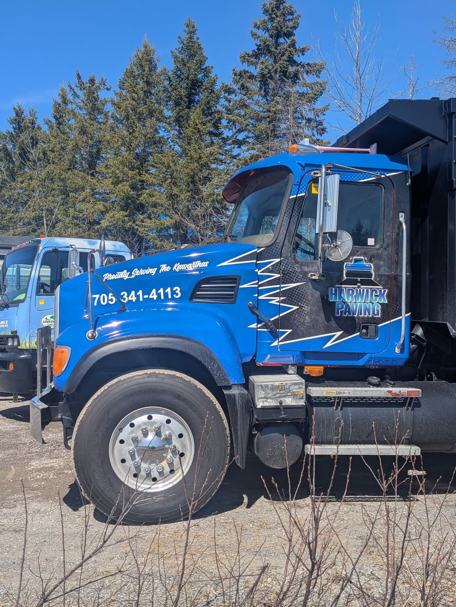
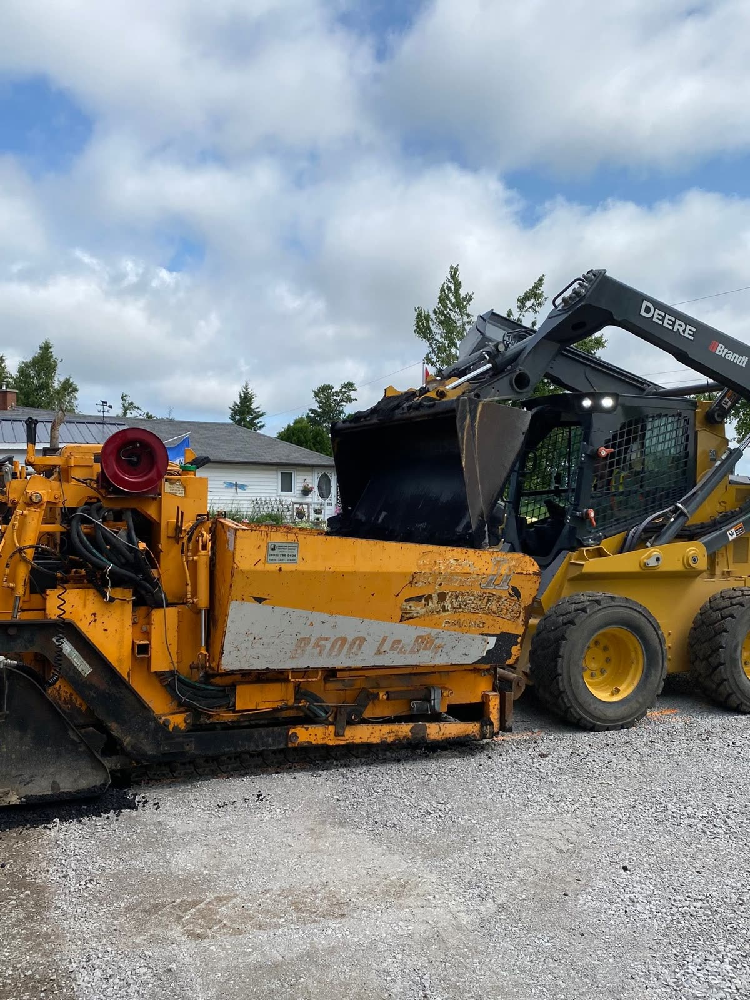
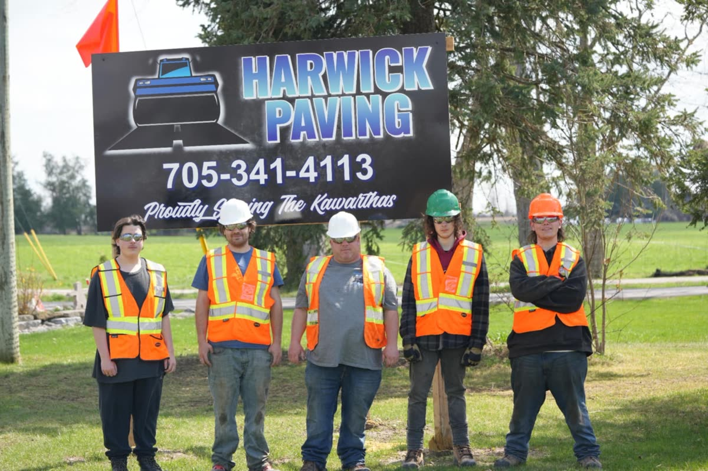

Eight-plus years operating asphalt pavers, skid steers, steel-drum and pneumatic rollers, grading gravel bases, ordering hot-mix asphalt, and directing crews on live residential, commercial, and municipal sites across Ontario. I know firsthand why industrial sensors, cameras, and software tools have to hold up in rain, dust, heat shimmer, and glare.
Real Field ResponsibilityManaging live asphalt jobs means solving site-slope problems in real time: coordinating gravel sub-base compaction, setting screed angle and Crown/Invert on the paver, monitoring asphalt delivery temperatures (140°C–160°C hot-mix window), setting multi-pass breakdown and finish rolling patterns to eliminate ridges, and keeping site safety strict under live traffic.


